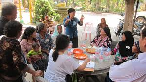
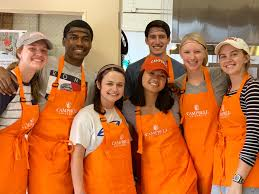

-

Fundraiser
Looking for a way to be a part of the Rise Against Hunger movement? There are a number of ways you can help and fundraise for us. You could do so at a special occasions, athletic events, through corporate support, community fundraisers or even by playing you favourite video games and streaming online. Through corporate-giving programmes, individual companies can make a vital contribution to fighting hunger. Corporate donations of cash, product or services can help free up scarce resources to help WFP feed more hungry people. In turn, corporations engage their employees, customers and other stakeholders in a vital, life-saving mission. Recent donations from private and not-for-profit entities have included frontline support to several emergency operations; expertise to enhance WFP's logistics and fundraising capacities; and critical cash for school feeding.
-

Attend an Event
We always organised events to generate awareness amoung people,we also arranged talk shows,celebrate world food day and do many more things.Responding to emergencies and saving lives and livelihoods – either through direct assistance, or by strengthening country capacities – remains at the heart of RAH’s operations, especially as humanitarian needs become increasingly complex and protracted. At the same time, RAH will support countries in ensuring no one is left behind by continuing to build resilience for food security and nutrition and addressing the growing challenges posed by climate change and rising inequality. Mirroring the structure of the 2030 Agenda, each of the Plan’s two Strategic Goals – support countries to achieve Zero Hunger and partner to support implementation of the SDGs – is articulated through Strategic Objectives and Strategic Results, against which progress can be measured.
-

Schools and Universities
Many schools,colleges and universities helps our movement by volunteering to feed the hungry and poor ones.The Rise against Hunger (RAH) has long-standing partnerships with think tanks and academia with expertise in a diverse range of subject areas. Organizations involved in emergency preparedness, nutrition, food security, safety nets, food safety, supply chain management and logistics, as well as public health and agricultural development, bring their unique know-how to help pave the way for a world with zero hunger. Many of these partnerships are geographically based, focused on research specific to a particular region.Around 16% of all of RAH’s partnerships are with academia and think tanks. The organizations we collaborate with include the International Food Policy Research Institute (IFPRI), the Swiss Federal Institute of Technology, European Centre for Mid-Range Weather Forecasts and National Aeronautics and Space Administration (NASA).
-

Engage
There are volunteer opportunities and other ways to participate in our work. These can range from webcasts, voluntering, wearing buttons and badges to spread the message and requesting a speaker to give a talk.Achieving zero hunger and putting an end to the food insecurity that blights the lives of more than 800 million people worldwide is the work of many. To pursue this goal, the Rise against Hunger (RAH) works collaboratively with thousands of partners, including governments, private sector, UN agencies, international finance groups, academia, NGOs and other civil society groups. The more than 1,000 NGOs we collaborate with around the world constitute our biggest group of partners. RAH has always relied on partnerships to drive our activities and, in support of Agenda 2030 and the 17 Sustainable Development Goals (SDGs), we are committed to working with a wide range of partners in new ways, including leveraging multi-stakeholder partnerships, to better meet people’s needs and leave no one behind. This new way of working together is reflected in SDG 17 on partnership, which serves as a pillar of WFP’s strategic plan, along with SDG 2,on achieving Zero Hunger.
-

Work With Us
We have job opportunities and internships in our offices all over the world. We also regularly recruit volunteers for our field projects.Volunteering with the Rise against Hunger (RAH) means helping millions of people around the world. Our volunteers make a difference every day, contributing their expertise and experience to add value to the organization in different functional areas. RAH offers the opportunity for volunteers to work in the areas they know best, while helping the organization achieve its goal of Zero Hunger.The Rise Against Hunger movement is proud to work with around 1,000 non-governmental organizations (NGOs) around the globe, from small grassroots groups to large international aid agencies. Without this collaboration, our efforts to bring much-needed assistance to almost 100 million people in 83 countries would be jeopardized. Without the vocal support of these organizations, our efforts to put Zero Hunger at the top of the international agenda would be far less successful.
-

Stand With Refugees and feed them
More than 68.5 million people have been forced to flee their homes, the largest number ever recorded. This global displacement crisis is made worse by countries closing their borders and turning their backs on the most vulnerable people. This is a humanitarian crisis, and it demands a more humane response.Since the beginning of the Syrian crisis in 2011, RAH has provided life-saving food assistance to families in need. This was only possible thanks to the support of 22 national NGOs operating inside Syria, including the Syrian Arab Red Crescent (SARC) and two international NGOs – the Aga Khan Foundation and Action Against Hunger. These partners have been fundamental to RAH’s work, facilitating the handling and distribution of food assistance, especially in highly insecure areas, and using their contact with local actors to allow us to reach vulnerable people.